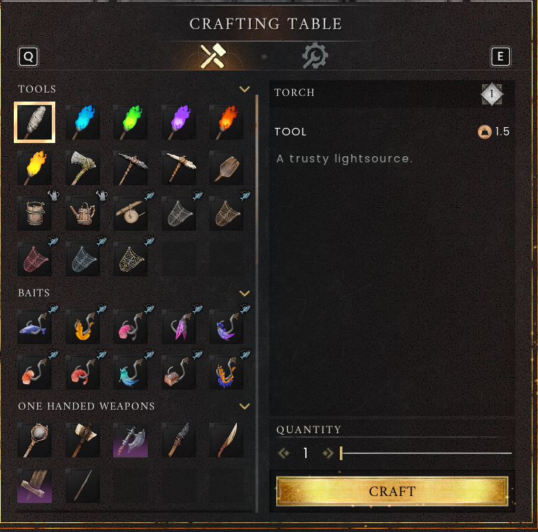
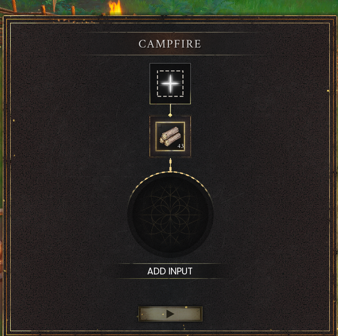

The tutorial, step by step
Learn survival, cooking and runes before setting off for the clan village.
On this page
Controls for this walkthrough
Interact E · Inventory Tab · Map M / J · Build B
Full controls and menu navigation · * marks a controller-equivalent mapping; the in-game prompt takes priority.
Accept or skip First Steps
At the ruined Temple of Saradomin in Temple Woods, speak to the Wise Old Man. Accept First Steps for the guided route below. Decline if you want to join friends immediately; the Wise Old Man then waits on the first floor of a ruined building at the far end of Bramblemead Village.
Doric: Getting Started
- Speak to Doric outside the temple. Use the interaction prompt to collect dirty water from a nearby pond. Dirty water needs boiling before it becomes a safe drink.
- Collect 10 Ash Logs and 8 Stone. Loose branches and stones are a good starting point.
- Open Build Mode and place a Crafting Table using 4 Ash Logs. Interact with the table.
- Craft a Stone Club with the remaining 6 Ash Logs + 8 Stone. Put it on your action bar and equip it.
- Return to Doric with the club. He gives you Vegetable Soup and directs you to Vannaka.


Vannaka: Ratcatcher
- Find Vannaka north-east of Doric, south of the windmill. Accept the rat hunt.
- Defeat four Giant Rats and collect their Raw Rat Meat. Leave enough stamina to dodge; fight one at a time where possible.
- Build a Campfire with 4 Ash Logs + 4 Stone. Bring additional logs for fuel.
- Place meat in the cooking slot and fuel in its slot. Cook at least 2 Rat Roasts and take the finished food out.
- Return to Vannaka. Your rewards include a Stone Logging Axe and a Stone Dagger.


Zanik: Rune Mysteries
- Follow the road east to Zanik. Gather 50 Ash Logs for her objective and speak to her again. She supplies a Stone Pickaxe.
- Mine Stone and Rune Essence. Build a Rune Altar with 12 Stone + 4 Rune Essence. Keep extra essence for making runes.
- Use the altar to craft Air and Astral Runes as directed by the active quest. One essence produces a batch of runes; the altar’s building cost is separate.
- Follow Zanik’s current spell instructions. Check your spellbook for the rune cost before casting.
- Return to Zanik for Air Runes, Astral Runes and a Woodcutting tome. Then return to the Wise Old Man in Bramblemead Village to finish First Steps.
From the tutorial to home
Bramblemead Village is a quest destination. DragonInfinity’s basecamp is a separate player-built location. Follow the host’s annotated camp route and ask which bed you may claim.
Saved on this browser only. Tick items as you go.
Further reading
For exact requirements, detailed walkthroughs and more depth, visit the topic pages below.
Wiki adaptations and data: RuneScape: Dragonwilds Wiki contributors, CC BY-NC-SA 3.0. See credits for source dates.